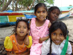
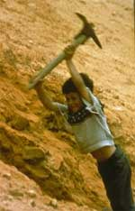

|
|
Kavitha kann wieder lachen
terre des hommes zieht Zwischenbilanz der Hilfe in Südasien
|
|
 |
| Neue Hoffnung: Mit der Hilfe von terre des hommes hat die achtj‰hrige Kavitha (links) den Schock des Tsunami ¸berwinden kˆnnen. |
Sechs
Monate ist es her, dass die achtjährige Kavitha ihre Brüder
und ihren Vater verlor. Sie selbst wurde gerettet, und auch ihre Mutter überlebte
die verheerende Flutwelle, die das Fischerdorf im indischen Bundesstaat
Tamil Nadu ebenso zerstörte wie weite Teile der Küsten in ganz
Südasien. Kavitha konnte den Verlust des Vaters und der Brüder
nicht verwinden; wochenlang war sie kaum ansprechbar. Erst in Spielgruppen
mit anderen Kindern, mit gemeinsamem Malen und Singen und in Gesprächen
lernte das Mädchen ganz langsam, ihren Schrecken zu verarbeiten.
Heute geht Kavitha wieder zur Schule und spielt mit ihren Freundinnen
ohne Angst am Strand.
Die psycho-soziale Betreuung von Kindern ist einer der Arbeitsschwerpunkte
des Kinderhilfswerks terre des hommes nach dem Tsunami. 11,5 Millionen
Euro Spenden erhielt terre des hommes für die Hilfe in den Flutgebieten.
Nach sechs Monaten zieht Michael Bünte, Soforthilfe-Referent bei
terre des hommes, eine erste Bilanz der Sofort- und Wiederaufbauhilfe: »Wir
haben seit dem Tsunami in Indien, in der indonesischen Provinz Aceh
und in Thailand vielfältige Hilfsaktivitäten entwickelt.
Unsere regionalen Schwerpunkte dabei sind Indien und Aceh, wo die Verwüstungen
besonders schlimm waren.«
Die erste Phase der Nothilfe war geprägt von Hilfstransporten
mit Lebensmitteln, Kleidung und Medikamenten sowie dem Aufbau von Notlagern. »Inzwischen
sind wir intensiv mit dem Wiederaufbau beschäftigt«, so
Michael Bünte. Die Wiederherstellung von Fischerbooten und –ausrüstungen
ist dabei in Indien ein Schwerpunkt; ebenso der Bau von Übergangswohnstätten
und die Reintegration der Kinder in den Schulbetrieb. Etwa 4,2 Millionen
Euro wurden in Indien bereits eingesetzt. Ein kleineres Programm mit
rund 400.000 Euro widmet sich der Wiederherstellung der Fischerei in
Thailand.
In Aceh steht nach den enormen Zerstörungen der Bau von Wohnhäusern
im Mittelpunkt. Rund 800 Häuser sollen errichtet werden, 300 davon
sind im Bau oder bereits fertiggestellt. Insgesamt hat terre des hommes
bisher 3,1 Millionen Euro für die Arbeit in Aceh eingesetzt. Das
Hausbauprogramm müsste dringend ausgeweitet werden, denn noch
immer leben etwa 70.000 Familien in Aceh in Zelten oder Baracken. terre
des hommes fordert daher die Bundesregierung auf, sich mit ihren zugesagten
Mitteln von insgesamt 500 Mio. Euro auch an solchen Programmen der
Hilfsorganisationen stärker zu beteiligen.
Für den Wiederaufbau wird weiter um Spenden für terre des
hommes gebeten:
- Konto 700 800 700, Stichwort »Flutwelle«,
Volksbank Osnabrück eG, BLZ 265 900 25
- Konto 120 790, Stichwort »Flutwelle«, Sparkasse Gaggenau-Kuppenheim,
BLZ 665 512 90
|
|
Neue Studie zur Werbung für Kinderpatenschaften
|
Eine kritische Bestandsaufnahme der öffentlichen Darstellung
von Kinderpatenschaften hat die Erziehungswissenschaftlerin Prof. Dr.
Annette Scheunpflug von der Universität Erlangen-Nürnberg in
einer jetzt veröffentlichten Studie vorgelegt. Annette Scheunpflug,
Inhaberin des Lehrstuhls Pädagogik, ist darin der Frage nachgegangen,
welchen Einfluss die Werbung für Kinderpatenschaften auf das Bild
der Entwicklungszusammenarbeit in der deutschen Öffentlichkeit hat.
Weitere Informationen:
|
|
Ausbeutung von Kindern in Steinbrüchen und
Minen abschaffen!
|
Die Ausbeutung von rund einer Million arbeitender Kinder in Steinbrüchen
und Minen muss sofort beendet werden. Dies fordert das entwicklungspolitische
Kinderhilfswerk terre des hommes anlässlich des internationalen
Tages gegen Kinderarbeit am 12.Juni. »Es ist ein Skandal, dass
heute Kinder in vielen Ländern stundenlang schwerste Arbeiten in
Steinbrüchen und Bergwerken verrichten, viel zu schwere Lasten schleppen
und mit gefährlichen Werkzeugen hantieren müssen«, erklärte
Wolf-Christian Ramm, Pressesprecher von terre des hommes. Ferner atmeten
Kinder Staub und giftige Dämpfe und arbeiteten mit Sprengstoff und ätzenden
Chemikalien. Vor allem in Steinbrüchen schuften viele Kinder unentgeltlich
als Schuldknechte.
terre des hommes teilt die Auffassung der Internationalen Arbeitsorganisation
(ILO), dass diese Form der Ausbeutung von Kindern schnellstens gestoppt
werden müsse. »Hierzu sind jedoch politische Weichenstellungen
erforderlich, denn die Ausbeutung von Minderjährigen als Sklaven
ist in erster Linie eine Folge der Armut der Familien und der Skrupellosigkeit
der Arbeitgeber«, so Ramm weiter. Die Arbeitsbedingungen müssten
deutlich verbessert werden, es müssten Erwachsene eingestellt
und fair entlohnt werden. Arbeitgeber, der Handel, Regierungen der
Industrie- und der Entwicklungsländer und auch Verbraucher seien
in der Verantwortung, sich mit ihren Möglichkeiten für das
Wohl der Kinder einzusetzen und ihnen Schulbesuch und eine Ausbildung
zu ermöglichen.
terre des hommes fördert Projekte für Kinder, die in Steinbrüchen
im indischen Bundesstaat Karnataka ausgebeutet werden. Tausende Kinder
und ganze Familien schuften dort als Schuldknechte und brechen Granit,
der auch nach Europa exportiert wird. terre des hommes unterstützt
die Familien bei der Wahrung ihrer Rechte gegenüber den Besitzern
der Steinbrüche und sorgt für eine Schulausbildung der Kinder.
Hintergrundmaterialien
und Links zum Thema Kinderarbeit und Kinderarbeit in Steinbrüchen |
|
Gutes Spendenergebnis 2004
|
Das entwicklungspolitische Kinderhilfswerk terre des hommes Deutschland
hat im Jahr 2004 Spenden in Höhe von 14,8 Millionen Euro eingenommen.
In dieser Summe enthalten sind 1,1 Millionen Euro, die noch 2004
für die Opfer des Tsunami in Asien gespendet wurden. Gegenüber
dem Vorjahr bedeutet das Ergebnis eine Steigerung von gut sechs
Prozent. Peter Mucke, Geschäftsführender Vorstand von
terre des hommes, zeigte sich angesichts schwieriger wirtschaftlicher
Zeiten und eines von Spardebatten geprägten Klimas über
die Bilanz sehr zufrieden. »Das Ergebnis gibt uns die Möglichkeit,
sowohl unsere allgemeinen Programme zum Schutz ausgebeuteter Kinder
als auch die speziellen Projekte zum Wiederaufbau für die Tsunami-Opfer
in Indien, Indonesien und Thailand zu fördern«, so Mucke.
Insgesamt
hat terre des hommes 2004 464 Projekte in 26 Ländern Afrikas,
Asiens und Lateinamerikas sowie in Deutschland unterstützt.
Dazu zählten
auch programmatisch neuere Ansätze, wie der Dialog mit den traditionellen
Koranschulen in Mali und Burkina Faso oder die Arbeit mit jungen Frauen
in Angola, die als Kindersoldaten missbraucht wurden.
Wolf-Christian Ramm, Pressesprecher von terre des hommes, erklärte,
dass terre des hommes inzwischen insgesamt 11,5 Millionen Euro
Spenden für die Tsunami-Opfer erhalten habe. Damit habe terre des
hommes in kurzer Zeit nahezu das Spendenergebnis des gesamten Vorjahres
erreicht. Eine solche Situation stelle jedoch besondere Anforderungen
an die Leistungsfähigkeit von Hilfsorganisationen. Entscheidend
für terre des hommes sei die vertrauensvolle Zusammenarbeit
mit einheimischen Partnern. Dabei verbinde terre des hommes
die kurzfristige Nothilfe mit langfristigen Entwicklungsprogrammen,
bei denen auch die Sicherung der politischen Interessen der
betroffenen Menschen eine wichtige Rolle spielten. »Zur
finanziellen Hilfe durch Spenden gehört eine deutliche
Parteinahme für die Opfer und die Vertretung ihrer Rechte gegenüber Behörden und Justiz, damit sich die Verhältnisse
für die
Menschen verbessern«, so Ramm. |
|
Recht auf Schule - aber nicht für alle Kinder in
Deutschland
|
Im vergangenen Jahr erhielt die nigerianische Familie M. Post von
der örtlichen Grundschule ihres rheinischen Wohnortes. Die Eltern sollten
nachweisen, dass ihr neunjähriger Sohn O. über eine ständige Aufenthaltserlaubnis
in Deutschland verfügt - dies sei Voraussetzung dafür, dass der Junge
die Schule besuchen dürfe. Ohne diesen Nachweis werde das Kind nach Hause
geschickt.
Eigentlich herrscht in Deutschland Schulpflicht. Doch tausende Kinder
sind von dieser scheinbaren Selbstverständlichkeit ausgeschlossen - weil
ihre Eltern Asylverfahren durchlaufen oder ihr Aufenthalt in Deutschland
nicht lanfristig gesichert ist.
Der Artikel beschreibt vor dem Hintergrund eines terre des hommes-Gutachtens,
wie Flüchtlingskinder bei der Beschulung benachteiligt werden.
Kompletter
Artikel
Flüchtlingskinder in Deutschland Studie »Wir
müssen draußen bleiben«
|
|
|
|
 Ansprechpartner Ansprechpartner
|
|
Wolfgang Deppisch
(Projektinfos)
Tel. 07222 / 32927
Heinz Wolf
(Sponsoring, Allgemeines)
Tel. 07225 / 75543
weitere Ansprechpartner
|
|
Erlöse
1992-2012
|
|

Jahr |
Euro |
1992 |
70.000 |
1993 |
75.600 |
1994 |
83.883 |
1995 |
69.617 |
1996 |
51.412 |
1997 |
61.749 |
1998 |
60.333 |
1999 |
68.742 |
2000 |
85.492 |
2001 |
106.375 |
2002 |
78.937 |
2003 |
84.027 |
2004 |
76.662 |
2005 |
149.941 |
2006 |
84.497 |
2007 |
105.958 |
2008 |
104.053 |
2009 |
100.833 |
2010 |
107.254 |
2011 |
103.600 |
| 2012 |
158.250 |
| 2013 |
163.420 |
1977-2013 |
mehr als 2,7 Mio. € |
|
Detailansicht der Erlöszahlen |
|
|


;)
;)